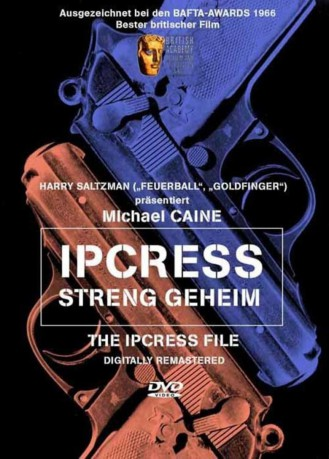

#6688 Ipcress - streng geheim
Alternativ: The Ipcress File
Auszeichnungen: 3 BAFTA-Awards gewonnen
 
 IMDB-Wertung: 7.3 / 10
IMDB-Wertung: 7.3 / 10  Metascore: 0
Metascore: 0 
Das Leben eines Geheimagenten im Dienst der britischen Regierung ist nicht unbedingt aufregend. Morgens wacht man mit zerwühlten Haaren in seiner kleinen Wohnung auf, die man mit seinem kargen Gehalt sich gerade so leisten kann, um dann mal wieder einen langweiligen Tag mit einer Observation zu verbringen. Das ist der Tagesablauf von Harry Palmer, der allerdings kein ganz gewöhnlicher Agent ist. Denn seine Vorgesetzten sind nicht unbedingt zufrieden mit ihm. Attribute wie arrogant, anmaßend, renitent und undurchsichtig finden sich in seiner Personalakte, auch kriminelle Neigungen werden dort vermutet. Von Befehlen, stramm stehen und „Ja“-Sagen hält Palmer sowieso nicht viel. Dann bekommt er von seinem Vorgesetztem, Colonel Ross einen neuen Auftrag und ein neues Team an die Seite und plötzlich steht die Welt des Agenten Kopf!
Jahr: 1965
Dauer: 107 Minuten
FSK: 12
Land: England Studio: Koch MediaTonspuren: DD5.1 - ,
Untertitel: Englisch,
Auflösung: 720p (1280x544) Größe: 4618 MB
Genre: Thriller
Regisseur: Sidney J. Furie
Drehbuch: W.H. Canaway
Soundtrack:
Darsteller:
 Michael Caine als Harry Palmer
Michael Caine als Harry Palmer Nigel Green als Major Dalby
Nigel Green als Major Dalby Guy Doleman als Colonel H.L. Ross
Guy Doleman als Colonel H.L. Ross- Sue Lloyd als Jean Courtney
 Gordon Jackson als Jock Carswell
Gordon Jackson als Jock Carswell- Freda Bamford als Alice
- Anthony Blackshaw als Edwards
- Stanley Meadows als Inspector Pat Keightley
- Glynn Edwards als Police Station Sergeant
 Max Faulkner als Prison Guard
Max Faulkner als Prison Guard- Barbara Roscoe als Rita , scenes deleted
- Aubrey Richards als Dr. Radcliffe
- Frank Gatliff als Bluejay
- Thomas Baptiste als Barney - American Agent
- Oliver MacGreevy als Housemartin
- Pauline Winter als Charlady
- Barry Raymond als Gray
- David Glover als Chilcott-Oakes
- Peter Ashmore als Sir Robert
- Mike Murray als Raid Inspector
- Anthony Baird als Raid Sergeant
- Tony Caunter als O.N.I. Man
- Charles Rea als Taylor
- Ric Hutton als Records Officer
- Douglas Blackwell als Murray
- Richard Burrell als Operator
- Zsolt Vadaszffy als Prison Doctor
- Josef Behrmann als Prison Guard
- Paul S. Chapman als Prison Guard
- Howell Evans als First Agent , uncredited
 Victor Harrington als Audience Member at Symposium , uncredited
Victor Harrington als Audience Member at Symposium , uncredited- Dido Plumb als Scientist , uncredited
Datei: X:\3-Trilogie(G-M)\Harry Palmer\Ipcress - streng geheim (1965, FSK12, 1280x544).mkv seit 07.08.2017
Festplatte: HD Collection-2(A-Z)-3(A-M)
 Alle Filme aus Gruppe '3-Trilogie(G-M)\Harry Palmer'
Alle Filme aus Gruppe '3-Trilogie(G-M)\Harry Palmer'